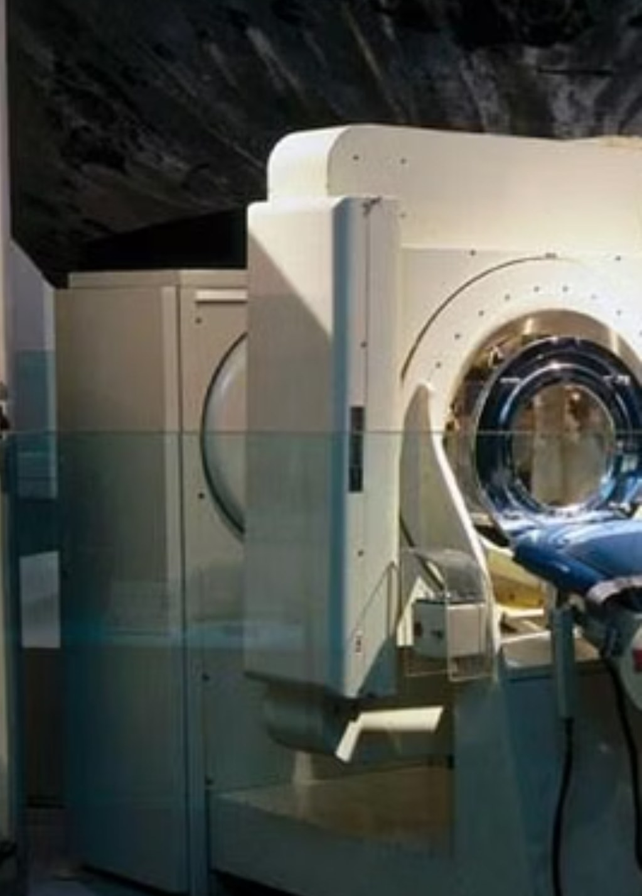
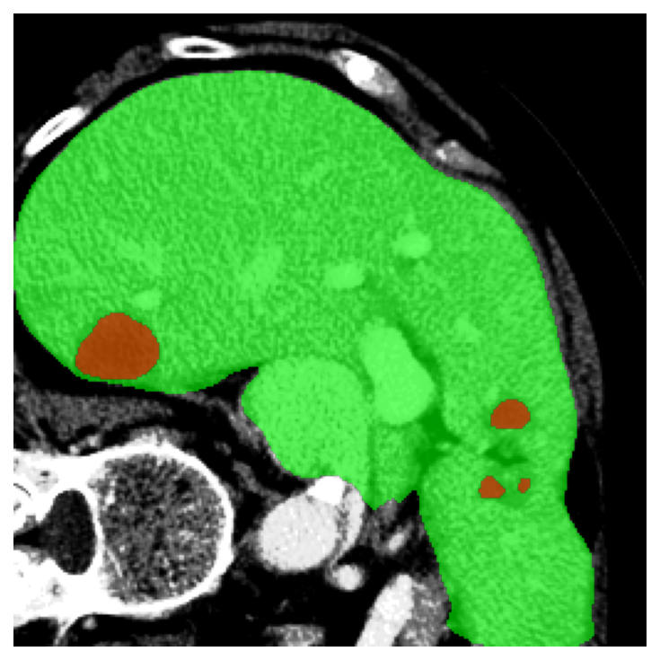
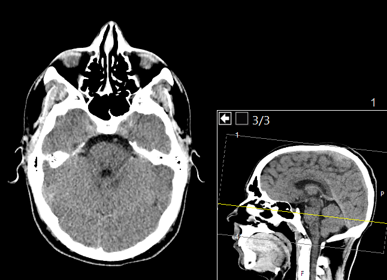

115學年度新鮮人成長營
RGB
一張照片，
藏著哪些數學？
游承書｜應用數學系SPACE / → 開始探索
關於我｜游承書
HELLO, FRESHMEN
我是游承書
應用數學系計算數學、影像科學與電腦視覺、機器學習
01用數學改一張照片
02用數學讓電腦看懂一張照片
03用數學看見照片裡沒拍到的東西
為什麼要學這個
YOU USED IT ALREADY, TODAY
從你早上睜開眼到現在，影像數學已經上工好幾次
解鎖手機臉變成一串數字，再比對像不像向量 ・ 機率
 拍照與濾鏡對焦、夜景、調色，全是一格一格算出來的函數 ・ 矩陣 ・ 最佳化
拍照與濾鏡對焦、夜景、調色，全是一格一格算出來的函數 ・ 矩陣 ・ 最佳化

醫院檢查CT 沒有切開你，是用數學算出切面矩陣 ・ 逆問題

AI 看影像找出病灶、行人、車道線微分 ・ 最佳化
這四件事骨子裡是同一件事：把照片當成數字，然後對數字動手。
座標 × 像素 矩陣
PIXEL MICROSCOPE
放大到最後，
畫面只剩格子
灰階每格 1 個數字：0–255
彩色每格 3 個數字：[R, G, B]
向量 × 顏色 向量
THREE NUMBERS, MILLIONS OF COLORS
一個彩色像素，就是一支三維向量
同一張自拍照，做四件事
DO FIRST, NAME THE MATH LATER
同一張自拍照，等一下會變四次
01變亮每個數字加一點
函數
02黑白三個顏色變一個數
向量
03模糊向鄰居借顏色
矩陣
04邊緣找變化最快的位置
微分
這四招做的事都一樣：改掉這張照片裡的 2,457,600 個數字。沒有魔法。
自拍照 01｜變亮 函數
ADD THE SAME NUMBER TO EVERY PIXEL
把每個數字都加一點，照片就亮起來
自拍照 02｜黑白 向量
THREE CHANNELS BECOME ONE NUMBER
不是刪掉顏色，而是把 RGB 加權組合
自拍照 03｜模糊 機率矩陣
BORROW COLOR FROM THE NEIGHBORS
每個像素不再單獨決定，改成看附近的平均
自拍照 04｜邊緣偵測 微分
LOOK FOR FAST CHANGES
邊緣不是顏色，而是亮度變化最快的地方
低光增強 函數
A SMARTER WAY TO BRIGHTEN
同樣是變亮，但暗的地方多拉一點、亮的地方少拉一點
INPUT｜日本城鎮夜景
RESULT｜增強後
對應規則｜哪個亮度被拉到哪
局部加權 × 卷積 矩陣微分
A TINY WINDOW WITH A BIG JOB
想看見鄰居，就讓一個 3 × 3 小矩陣滑過整張圖
平均模糊
新像素 = Σ（鄰居 × 權重）
同一台機器，只換那九個數字，就能模糊、銳化或抓邊緣。
概念參考：OpenCV 2D convolution / filter2D
濾鏡拆解 函數矩陣微分
美膚：兩次鄰域平滑 ＋ 提亮 ＋ 暖色
去噪｜手機夜拍為什麼還是乾淨的 矩陣機率
CLEAN IT UP WITHOUT WIPING IT OUT
雜訊要去掉，可是細節不能一起去掉
NOISY｜拉亮後的夜景
RESULT｜3×3 中值去噪
31972502845
中間那格是壞掉的 250。九個數字排序後是 1 2 3 4 5 7 8 9 250，取正中間的 5。
跟原圖的平均差距 —
和第 12 頁同一個 3×3 視窗，只是規則不同：卷積是「乘完再加」，會被一個壞掉的亮點整個拉走；中值是「排序後取中間」，那個亮點連進都進不來。視窗一樣，換個規則，能做的事就不一樣。
色彩風格轉移 機率
MATCH THE MOOD, NOT THE OBJECT
不用複製每個像素，也能搬走畫面的氣氛
SOURCE｜保留內容
REFERENCE｜想要的色調
RESULT｜套用後
—原圖 RGB 平均
—夕陽 RGB 平均
平均 / 標準差顏色的中心在哪／散得多開
社群軟體的「風格濾鏡」大多是這一招：不管畫面裡有什麼，只把顏色的平均和散開程度搬過去。
快門前的 0.3 秒｜自動對焦 微分最佳化
YOUR PHONE SOLVES THIS EVERY TIME YOU SHOOT
你按下拍照前，手機正在找一個最高分
LIVE VIEW｜模擬鏡頭移動
FOCUS CURVE｜反差分數
分數最高的位置，就是最清楚的位置分數＝畫面裡亮度變化的總量，也就是把第 10 頁的邊緣強度全部加起來
往右拖：分數還在上升就繼續走；開始下降代表走過頭了。
尚未進行峰值擬合
門檻分割｜醫學影像 機率最佳化
ONE NUMBER, TWO CLASSES
一條門檻，就能把骨頭從腦袋裡挑出來
INPUT｜真實腦部 CT 切面
OUTPUT｜被選中的像素
亮度 ≥ T → 選中
亮度 < T → 不選骨頭最會擋 X 光，所以最亮；腦組織居中；空氣最暗。
被選中的比例：—
投影 × CT 矩陣
COMPUTED TOMOGRAPHY — LIVE RECONSTRUCTION
影子越多，重建越接近真相

REAL CT上一頁那張切面，就是這樣算出來的
輪廓出來了，但還看得到一條一條的紋路。
投影 b ＋ 不同角度 → 重建 x
藏在裡面的切面 x
量到的所有影子 b
電腦重建的結果 x̂
簡化 filtered back projection｜概念參考 scikit-image Radon transform、NIBIB CT
影子解碼｜逆問題 矩陣最佳化
THE SHADOW-CODE PUZZLE
只看每排亮幾格，你能還原隱藏圖案嗎？
上方與左側的數字，就是量到的「影子」。點格子改變你猜的圖案。
A x = b
x 是看不到的圖案；b 是每排的加總。你只拿到答案，要倒推題目——這就是上一頁 CT 在做的事，只是縮小成 6×6。
先完成兩隻眼睛，再讓每排數字吻合。
有趣的地方：即使所有影子都吻合，也可能不只一個圖案。所以 CT 要掃很多角度，還要加上「人體大概長什麼樣」這種額外條件。
從「改像素」到「懂像素」 矩陣機率
WHAT DOES THE COMPUTER NEED TO ANSWER?
電腦視覺，把像素變成可以回答的問題
分類整張圖是什麼？相簿辨識貓或狗
偵測物體在哪裡？人臉解鎖、找出行人
分割每個像素是什麼？標出器官或病灶區域
概念參考：PyTorch｜Defining a Neural Network
AI 是怎麼學會的 微分最佳化
LEARNING MEANS ADJUSTING NUMBERS
模型犯錯，數學就告訴它：下一步往哪裡調
生成式 AI｜Diffusion 機率微分最佳化
HOW AI DRAWS SOMETHING THAT NEVER EXISTED
AI 畫圖的方法，是學會把雜訊擦乾淨
原圖
01拿真實照片，一步一步加雜訊
02讓模型練習：從吵一點的圖，猜回乾淨一點的圖
03真的要畫的時候，從純雜訊開始反覆擦，就長出一張沒人拍過的圖
往右拖：照片一步一步溶進雜訊。
還記得嗎：第 14 頁的去噪是把雜訊拿掉；第 20 頁的逆問題是從破壞後的結果倒推原本。Diffusion 就是把這兩件事做到底——先學會怎麼被弄壞，再學會怎麼還原。
這裡是概念示範：反向只是把同一條路倒著播；真正的模型每一步都是用學到的規則猜出來的。
回頭看｜六種數學地圖
ONE PHOTO, SIX MATH LENSES
剛才每一個效果，其實都是這六種數學
函數變亮 y = x + b、低光增強、濾鏡一格一格算
向量RGB 三個數字、黑白＝加權相加
矩陣像素表、模糊、3×3 卷積、中值去噪、CT 重建
微分邊緣偵測、自動對焦、AI 的調整方向
機率色彩統計、CT 門檻分割、電腦視覺的「有幾成把握」
最佳化自動對焦找最高分、模型訓練找最小誤差
函數改像素，向量與矩陣描述影像；
微分找變化，機率做判斷，最佳化找答案。
函數向量矩陣微分機率最佳化
線性代數把影像寫成向量與矩陣
程式設計把想法變成跑得動的程式
微積分找變化、調參數
機率統計面對雜訊與不確定
游承書｜csyou@o365.fcu.edu.twKEEP EXPLORING →